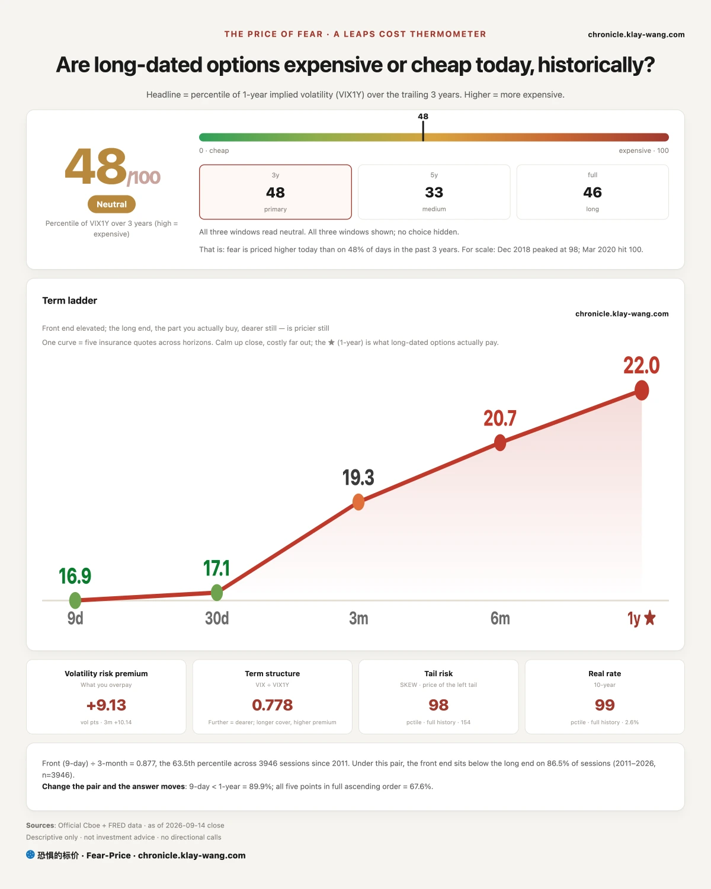
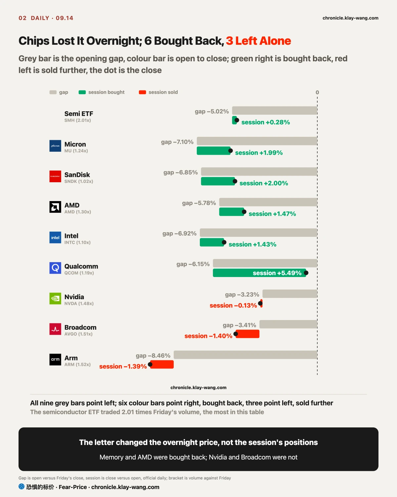
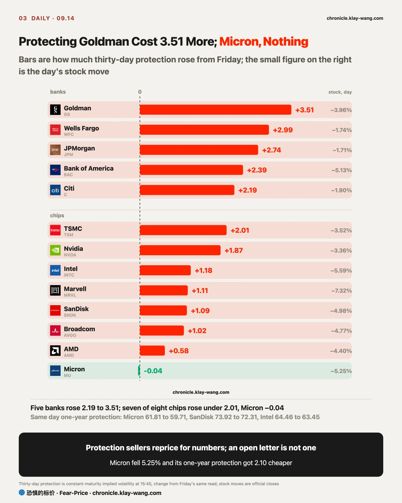
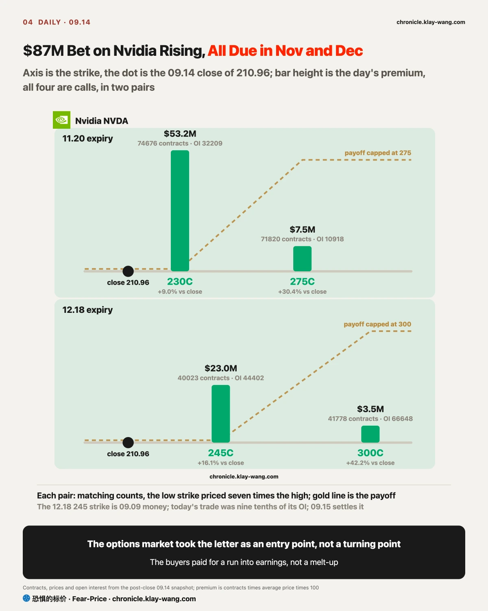
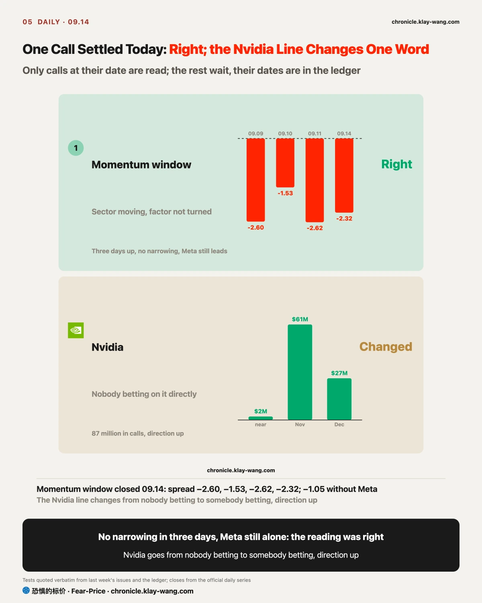

Fear-Price Index · 2026-09-14 · reading 47.5/100: one-year implied volatility VIX1Y at 21.97, the 47.5th percentile of the past three years, higher means dearer. Daily ledger and methodology → chronicle.klay-wang.com · Please credit: Fear-Price Index · chronicle.klay-wang.com
Friday 42.3, today 47.5, up 5.2 percentiles. The five tenors: nine-day 16.91, one-month 17.10, three-month 19.28, six-month 20.71, one-year 21.97. The nine-day tenor rose 2.44 from Friday; the one-year rose only 0.22.
What was added back is still the 09.16 meeting; the AI letter did not make it into the one-year tenor. The price of protection against an extreme fall went from 147.02 to 154.49, the 98.2nd percentile of its full history, and that level says someone is paying for a large fall, which nobody pays for a sector rotation. The price of rate protection (MOVE) went from 82.21 to 83.90, the 35.4th percentile of three years.
Rates are the lead story this week. The ten-year touched 5.012% intraday and closed at 4.960%; when it touched 5% in 2023.10 it fell back to 4.8 the same day, and this time it barely retreated. The dollar ETF rose 0.35%, gold fell 1.48%, silver 2.20%, copper 2.34%, and the emerging-markets ETF fell 2.72%, the largest loss in this set; that set came from the dollar and rates and has nothing to do with AI.

Almost all of Monday's decline was handed over before the open, and after the open somebody was buying. The semiconductor ETF gapped −5.02% and closed −4.75%, a net gain of 0.28% across the six and a half hours in between, on 2.01 times Friday's volume. Micron gapped −7.10% and recovered 1.99% in the session; SanDisk and AMD did the same, each recovering one to two points.
The line between what was bought back and what was not is clean. Intel and Qualcomm recovered, Intel gaining 1.43% after a −6.92% gap and Qualcomm 5.49% after −6.15%, both closing in the top six tenths of their ranges. Nobody caught Nvidia, Broadcom or Arm: Nvidia lost another 0.13% in the session, Broadcom another 1.40% and closed in the bottom 13% of its range, Arm closed −9.74%, all three on about 1.5 times Friday's volume. The buyers of memory and CPUs came back; the buyers of GPUs did not.
I do not think that list is a coincidence. On Friday the Financial Times reported that Situational Awareness, the fund that blew up in July, was rebuilding positions with fully paid deep out-of-the-money calls in exactly AMD, Intel, SK Hynix, SanDisk and CoreWeave, and Nomura counted 315 million dollars of premium over those two days. Today all five gapped down 5.8% to 8% and all five closed the session higher. For someone who just spent three hundred million on calls, Monday's price is a discount, and with fully paid options there is no margin call to force a sale.
Software is the other side of the same letter. The software ETF rose 5.04% and ServiceNow 7.40%, among the day's largest gains. These companies spent the past year cast as the ones AI would replace; a slower frontier is a breather for them. This one-side-down, one-side-up switch is the reverse of Friday, when hike odds went to ninety: Friday the S&P gapped +0.91% and lost 0.06% in the session, overnight money priced the news and nobody moved during the day; today overnight money priced the news again, and during the day somebody did move, and the move was to buy chips back.
The people buying during the session do not look like retail. Goldman's prime brokerage data has hedge funds as net buyers of US technology on 10 of the last 11 sessions, with the two-week pace in the 97th percentile of five years, led by semiconductors. People who had just finished building positions neither sold nor chased on Monday, which says the letter changed the price and not the positions, and that is the most important thing about today. Tomorrow's open tests it: if the semiconductor ETF gaps down more than 2% again and nobody catches it during the day, today's buying was short covering and this section is void.

The protection sellers changed their prices on banks today, and no amount of chip selling made them change on chips. Thirty-day protection on Goldman went from 32.27 to 35.78, and Wells Fargo, JPMorgan, Bank of America and Citi each rose 2.19 to 2.99, the five largest rises on the whole table. The same day Micron's stock fell 5.25% and its thirty-day protection went from 58.18 to 58.14, which is no move; the thirty-day volatility index on the whole semiconductor ETF went only from 34.86 to 35.05.
The one-year tenor is even clearer: Micron's one-year protection fell from 61.81 to 59.71, 2.10 cheaper, SanDisk 1.61 cheaper, Intel 1.01 cheaper. A company whose stock fell 5% got cheaper to insure for a year, and in the protection sellers' eyes there is only one reading: they did not put the letter into these companies' next twelve months. What they did put in was the bank guidance.
The bank side has a concrete cause. Bank of America's CEO said at the Barclays conference on Monday that third-quarter trading revenue would be flat on last year and investment banking fees down at least a tenth from last year's 2.0 billion dollars, and the stock fell 5.13%, the most among the large banks. One line of guidance made five banks' protection dearer at once while an open letter did nothing to chip protection; the difference is that the guidance came with numbers and the letter came with an opinion, and protection sellers only reprice for numbers. The financials ETF's 09.30 55 puts traded 13624 contracts, 3.4 times open interest; someone bought bank protection through month-end while they were at it.
Index and rate protection got dearer together ahead of the meeting. Thirty-day protection on the S&P went from 12.45 to 13.21, and the price of rate protection (MOVE) from 82.21 to 83.90. Friday's kill condition was S&P thirty-day protection back above 14 before 09.15; today it is 13.21, not there, so Friday's call stays for now. Micron gets a number too: if its thirty-day protection climbs above 62 after the 09.16 decision while the stock does not rebound, the protection market has caught up with the letter late, and this section has to change its mind.

The biggest money in Nvidia options today bet on a rise in November and December; nobody bet on a fall this week. Four call strikes, about 87 million dollars in total, more than ten times the Nvidia calls that Friday's money had placed on today's expiry. On a day the stock fell 3%, somebody put eighty-seven million into calls two to three months out, and I read that as the options market treating the letter as an entry point, not a turning point.
The near end was barely touched. The 09.25 220 calls traded only 11708 contracts, about 2.2 million dollars, less than a fifth of the 11.20 strike; Friday's 220 calls expiring today, 60911 contracts, closed at 210.96 and all went to zero. The money sat in two expiries and four strikes:
The two pairs are the same trade. One expiry, a large count at the lower strike, almost the same count at the higher strike, the higher priced at a seventh of the lower; the lower strike traded 2.3 times its open interest, the higher 6.6 times, at an average of 350 contracts a trade, which retail does not print. Pay for the low strike, take back a tenth or more from the high one, and the bet is a move above 230 before 11.20 with nothing extra earned above 275. The buyers think the low strike is reachable and did not pay for the high one, and that restraint is itself the view: a run into earnings, not a melt-up. The 11.20 expiry covers Nvidia's third-quarter report, published in late November in each of the past two years. It can also be read the other way, with 275 and 300 bought outright as deep out-of-the-money calls, the same play Nomura saw in AMD and SanDisk last week; both readings point up and differ only on whether the payoff is capped.
The 12.18 245 calls are the money that arrived on 09.09; on 09.10 this letter noted their settled open interest had gone from 9924 to 44402. Today 40023 contracts traded there, nine tenths of the open interest, and 41778 traded in the 300 calls the same day. Either those holders used the dip to move the strike up, selling the low and buying the high at today's cheaper price for a higher target, or new money opened a new pair. Tomorrow's settlement decides it: open interest in the low strike falling below twenty thousand is a roll; open interest in the November strike rising by fewer than twenty thousand means today's seventy thousand were same-day position maintenance, and the entry-point line gets withdrawn.
Two other names ran the same play the same day: Microsoft's 11.20 535 and 605 calls traded seventeen thousand contracts each, 9.9 and 14.2 times open interest; Intel's 130 calls on the same expiry traded 29743 contracts, 33.8% above the close. All three expiries fall in the November earnings season, and every one of these bets is on earnings week. On the first day of the AI slowdown letter, the largest bets landed on AI hardware earnings, which says more than any commentary. Money does not move its expiry date for a letter; it only moves its price, and today it barely moved even that.
The momentum window is the only call that reached its date today, and it was right; the Nvidia line has to change today.
The momentum window. The 09.09 reading was that the sector was moving underneath while the momentum factor itself had not turned, with a kill if within three days Meta stopped single-handedly driving the weak group while the spread still did not narrow. The spread over three days: 2.60 behind on 09.09, 1.53 on 09.10, 2.62 on 09.11, 2.32 today, no narrowing; strip out Meta and today is only 1.05 behind, so Meta still drives it alone. Three days are up, the condition did not trigger, and this one settles as right. The 09.08 line, that momentum rarely restarts within a month of rolling over, held today.
Nvidia. Last week's call was that nobody was betting on it directly and it moved with the index. Today it fell 3.36% from Friday on 1.48 times volume, its thirty-day protection rose 1.87, and the 87 million at the far end is calls. The call changes by one word: somebody is betting on it, and the direction is up.
No trading advice; only today's prices converted into things you can judge for yourself.
If you hold semiconductors: today's decline was given overnight, and memory and AMD were bought back one to two points in the session; Nvidia and Broadcom were not. One-year protection on Micron got 2.10 cheaper; the protection sellers did not treat the letter as a twelve-month matter. What to watch is tomorrow's open: another gap that gets caught confirms today's reading; another gap that nobody catches changes it.
If you hold banks: the five largest rises in thirty-day protection were all banks, caused by Bank of America's third-quarter guidance and unrelated to the letter. Someone bought the financials ETF's month-end puts, 3.4 times open interest. Going into Wednesday's meeting, banks are the one sector whose protection is being priced off their own news.
If you hold software: the software ETF rose 5.04%, and what rose was relief, not orders. After the close Trump called Jensen Huang and called the slowdown a hoax; software gave back 0.3% to 0.5% after hours and chips rose 0.5% to 1.1%, so Monday's daytime switch had already started reversing by evening.
If you hold long bonds: the ten-year touched 5% intraday and the long-bond ETF closed flat; rate protection is 83.90, 1.69 dearer than Friday. Timiraos wrote on 09.11 that once hiking starts it rarely stops at one, and after the CPI the market moved its count of hikes by next June from two to three. Tuesday brings a 13 billion dollar twenty-year auction and 09.16 brings the decision; this week the price of long bonds is set by those two things, not by AI.
If you hold nothing and are waiting for an entry: protection against an extreme fall is at the 98.2nd percentile of its full history, and one-year protection is at the 47.5th percentile of three years. Put the two together and the market is paying for one large fall, not for a slow one.